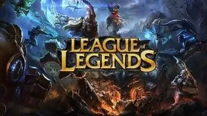
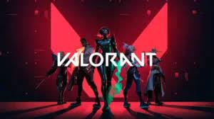
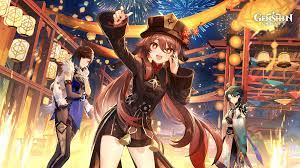
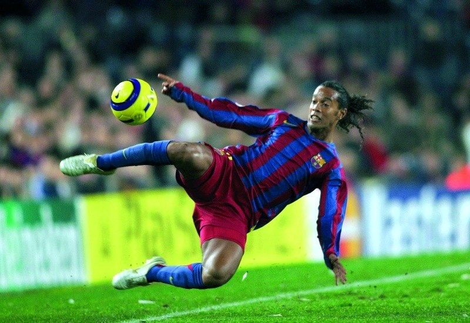
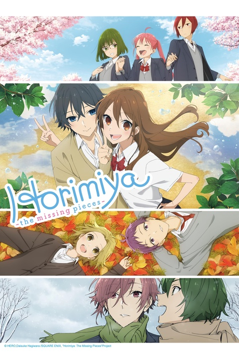

Hobbies
Images leads to the respective Wikipedia pages
Gaming
- League Of legends
- Valorant
- Genshin Impact
A multiplayer online battle arena video game developed and published by Riot Games.
A first-person tactical hero shooter developed and published by Riot Games
An action role-playing game developed by miHoYo
Football
My all time favorite is Ronaldinho Gaúcho
Summary: A Brazilian former professional footballer who played as an attacking midfielder or winger. Widely regarded as one of the greatest players of all time, he won two FIFA World Player of the Year awards and a Ballon d'Or.
Anime
My Favorite Anime to watch is called HoriMiya
Summary: Horimiya is about Kyouko Hori and Izumi Miyamura, two very different people who meet and develop a friendship. Hori is a popular student, while Miyamura is an introverted and nerdy outcast.
